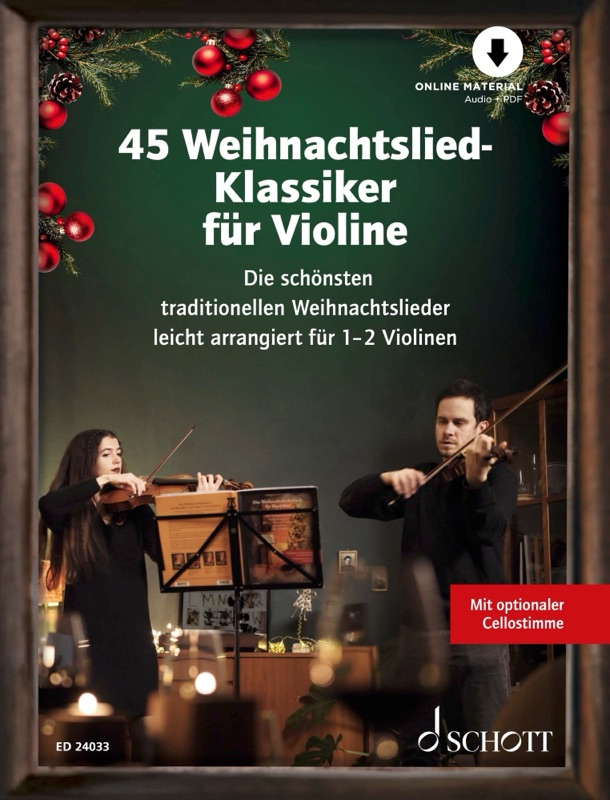

Weihnachtslieder auf der Geige lernst du am schnellsten mit Noten, die Fingersätze zeigen, für ein oder zwei Violinen gesetzt sind und sich allein, im Duo oder mit Cello spielen lassen. Das Heft 45 Weihnachtslied-Klassiker für Violine bringt genau das mit: bekannte Lieder, die in der Musikschule und am heimischen Notenständer gleich funktionieren.

45 Weihnachtslied-Klassiker für Violine: 45 Lieder für ein oder zwei Violinen mit optionalem Cello, im Format 23 × 30 cm – bei Schott Music und bei Amazon erhältlich.
45 Weihnachtslied-Klassiker ansehenWer im Advent Geige spielen möchte, steht oft vor dem gleichen Problem: Entweder sind die Arrangements zu schwer, oder sie liegen nur für ein Instrument vor und taugen nicht fürs gemeinsame Spiel. Weihnachtsnoten gibt es viele, doch Ausgaben mit guten Playalongs sind sehr selten. Dabei ist Weihnachten die Zeit, in der Familie, Freunde und Musikschulgruppen am liebsten zusammen musizieren. Mit der richtigen Ausgabe wird aus dem Üben schnell ein kleines Konzert unterm Baum.
Diese vier Punkte entscheiden, ob dir die Weihnachtslieder auf der Geige Freude machen.
- Fingersätze in den Noten ersparen langes Ausprobieren und geben gerade Schüler:innen Sicherheit.
- Arrangements für eine oder zwei Violinen erlauben Solospiel, Duo und Spiel im Unterricht mit derselben Ausgabe.
- Ein optionales Cello macht aus dem Duo ein Streichtrio, ohne dass jemand umschreiben muss.
- Play-Alongs zum Download, auf denen zweite Violine und Cello spielen, machen dich beim Üben allein zum Teil eines Streichtrios und lassen sich genauso für ein Vorspiel nutzen.
Was sollten Noten für Weihnachtslieder auf der Geige mitbringen?
Gute Weihnachtsnoten für die Geige haben bekannte Lieder, einen überschaubaren Schwierigkeitsgrad, klare Fingersätze und Stimmen, die sich im Zusammenspiel kombinieren lassen. Fehlt eines davon, bleibt das Heft schnell ungenutzt im Regal liegen.
Besonders im Unterricht und beim Üben zu Hause machen sich diese Merkmale bezahlt:
- Bekannte Melodien: Wenn du das Lied im Ohr hast, hörst du sofort, ob die Tonhöhe stimmt.
- Fingersätze: Sie zeigen den sinnvollen Weg über die Saiten und sparen Lehrkräften wie Eltern viel Erklärzeit.
- Eine oder zwei Stimmen: So spielt ein Kind allein, mit Lehrer:in oder mit Geschwistern aus demselben Heft.
- Handliches Format: Die Seiten sollten gut auf den Notenständer passen und nicht zuklappen.
Wie wichtig Fingersätze für das Lernen sind, beschreibt auch das Lexikon: Der Fingersatz legt fest, mit welchem Finger welcher Ton gegriffen wird, und entscheidet damit über Spielfluss und Sauberkeit der Intonation.
Was steckt in „45 Weihnachtslied-Klassiker für Violine“?
Das Heft enthält 45 bekannte Weihnachtslieder in alphabetischer Reihenfolge, gesetzt für ein oder zwei Violinen mit Fingersätzen und einem optionalen Cello. Dazu kommen Play-Alongs, die du mit einem Code aus dem Heft herunterladen kannst. Es erscheint bei Schott Music, hat 48 Seiten im Format 23 × 30 cm mit Rückendrahtheftung und kostet 18,50 €.
Zum Repertoire zählen deutsche Klassiker wie „Alle Jahre wieder“, „Es ist ein Ros’ entsprungen“, „Fröhliche Weihnacht überall“ und „Es wird scho glei dumpa“ sowie internationale Titel wie „Away In A Manger“, „Deck The Halls“ und „Go Tell It On The Mountain“. Das vollständige Inhaltsverzeichnis findest du auf der Produktseite der 45 Weihnachtslied-Klassiker. Weitere Angaben zur Ausgabe stehen bei Schott Music und bei Amazon.
Gut zu wissen: Die Arrangements sind laut Verlag leicht bis mittelschwer. Das passt für Schüler:innen mit etwas Erfahrung genauso wie für Wiedereinsteiger:innen, die nach Jahren die Geige wieder aus dem Kasten holen.
Wie spielst du die Lieder allein, im Duo oder als Trio?
Dasselbe Heft trägt alle drei Besetzungen: Allein spielst du die erste Stimme zum Play-Along, auf dem zweite Violine und Cello zu hören sind, zu zweit teilt ihr euch erste und zweite Violine, und mit dem Cello wird daraus ein Streichtrio. Du brauchst dafür keine weiteren Ausgaben und musst nichts umschreiben.
- Solo mit Play-Along: Den Code aus dem Heft einlösen, die Aufnahme herunterladen und die erste Stimme dazu spielen. Auf dem Play-Along übernehmen zweite Violine und Cello, du spielst also zusammen mit der Aufnahme im Streichtrio. Das hilft beim Üben, wenn gerade niemand sonst Zeit hat, und ebenso beim Vorspiel: Bei der Adventsfeier oder am Vorspielabend klingt es voll, auch wenn du allein auf der Bühne stehst.
- Duo mit zwei Violinen: Wer die erste Stimme übernimmt, hält die Melodie, die zweite Stimme ergänzt sie harmonisch. Das klappt in der Musikschule mit Lehrkraft und Schüler:in ebenso wie zu Hause mit Geschwistern.
- Streichtrio mit Cello: Die optionale Cellostimme legt ein tiefes Fundament unter beide Violinen. Auch Erwachsene, die gerade wieder mit dem Cello anfangen, finden so einen guten Einstieg.
Bevor du das Heft kaufst, kannst du in die Play-Alongs reinhören, zum Beispiel bei Spotify und bei Apple Music. So hörst du Tempo und Klang der Begleitung schon vorab.
Wie viel Spaß gemeinsames Musizieren macht, zeigen auch Materialien für Streicherklassen: Schon nach wenigen Unterrichtsmonaten klingen einfache Weihnachtsarrangements im Zusammenspiel überzeugend.
Warum eignen sich die Noten für die Musikschule?
In der Musikschule spart ein Heft für alle viel Organisation: Alle Schüler:innen haben dasselbe Notenmaterial, die Lehrkraft verteilt einfach die Stimmen, und niemand muss Kopien suchen oder Einzelblätter sortieren. Das Heft lässt sich im Einzel- wie im Gruppenunterricht ohne Vorbereitung einsetzen.
- Einheitliche Ausgabe: Gruppe, Duo oder Einzelunterricht arbeiten mit demselben Heft.
- Fingersätze vorhanden: Die Lehrkraft muss sie nicht Lied für Lied eintragen.
- Klare Rollen: Die erste Stimme führt die Melodie, die zweite ergänzt, das Cello trägt den Bass.
- Play-Alongs: Schüler:innen üben zu Hause im Trio mit zweiter Violine und Cello, kommen sicherer in die nächste Stunde und können die Aufnahmen auch beim Vorspiel einsetzen.
- Auftritte vorbereiten: Für Adventsfeier, Seniorenheim oder Familienfest ist schnell ein Programm zusammengestellt.
Wie klappt das Üben zu Hause?
Zu Hause üben Kinder und Erwachsene am besten in kurzen, regelmäßigen Einheiten und mit einem Ziel: Ein Lied pro Woche, erst langsam mit Fingersatz, dann mit Play-Along im richtigen Tempo.
- Lied zuerst hören: Spiele die Aufnahme einmal vor, damit du die Melodie im Ohr hast.
- Langsam mit Fingersatz spielen: Achte auf saubere Töne, nicht auf Tempo.
- Schwierige Takte herausnehmen: Übe nur die Stellen, die haken, und wiederhole sie mehrmals.
- Mit Play-Along spielen: Erst jetzt zum Play-Along im Originaltempo, bei dem zweite Violine und Cello mitspielen. So fühlt sich das Ergebnis nach Musik an.
- Weitergeben: Zum Schluss ein Lied bei der Familienfeier vorspielen, gern im Duo.
Tipp aus der Praxis: Wer vor Weihnachten nur wenig Zeit hat, beginnt mit zwei oder drei Liedern, die er richtig gut kann, statt mit zehn halb fertigen. Ein sicher gespieltes „Stille Nacht“ bewegt mehr als ein Medley voller Stolperstellen.
Und wenn du auch weihnachtliche Popsongs spielen möchtest?
Für Popsongs wie „White Christmas“, „Winter Wonderland“ oder „Last Christmas“ passt Das Weihnachtsliederbuch für Blockflöte und andere C-Instrumente. Es enthält 100 Weihnachtslieder aus aller Welt, vom traditionellen Klassiker bis zum weihnachtlichen Hit, im Format 23 × 30 cm mit Stay-Open-Bindung, die auf dem Notenständer aufgeschlagen bleibt.
Die Geige ist wie die Blockflöte ein C-Instrument und spielt die Töne so, wie sie notiert sind. Deshalb lässt sich die Ausgabe auch für Violine nutzen, sie ist die ideale Ergänzung zu den 45 Klassikern. Wer beide Hefte nebeneinander legt, hat die traditionellen Lieder aus dem Violinenheft und die Pop-Titel aus dem großen Weihnachtsliederbuch.
Wie sich die Ausgaben mit Klavier, Gitarre oder Cello kombinieren lassen, erklärt der Beitrag Weihnachtslieder fürs gemischte Ensemble.
Welche Ausgabe passt zu wem?
- 45 Weihnachtslied-Klassiker für Violine: für alle, die traditionelle Lieder mit Fingersätzen, im Duo oder Trio und mit Play-Alongs spielen möchten – ideal für Musikschule und Zuhause.
- Das Weihnachtsliederbuch für Blockflöte und andere C-Instrumente: für alle, die zusätzlich weihnachtliche Popsongs und eine Sammlung von 100 Liedern wünschen.
Beide Bücher gehören zu den Liederbüchern für Alt und Jung. Die 45 Weihnachtslied-Klassiker für Violine gibt es im Fachhandel, bei Schott Music und bei Amazon; das Weihnachtsliederbuch für Blockflöte und C-Instrumente findest du über die Produktseite. Wer rechtzeitig vor dem ersten Advent bestellt, hat die Noten pünktlich zur Probenzeit.
Häufig gestellte Fragen zu Weihnachtsliedern auf der Geige
Für welches Niveau sind die 45 Weihnachtslied-Klassiker geeignet?
Laut Verlag sind die Arrangements leicht bis mittelschwer. Geeignet sind sie für Schüler:innen mit etwas Erfahrung und für Wiedereinsteiger:innen. Die Fingersätze helfen zusätzlich, auch unbekanntere Passagen sicher zu spielen.
Kann ich die Lieder allein spielen?
Ja, mit den Play-Alongs, die du mit dem Code im Heft herunterladen kannst, spielst du die erste Stimme zur Aufnahme, auf der zweite Violine und Cello spielen, und brauchst keine Mitspieler:innen. Das gilt zum Üben ebenso wie fürs Vorspiel.
Kann ich vorab in die Play-Alongs reinhören?
Ja, die Aufnahmen gibt es als Playlist bei Spotify und bei Apple Music. Zum Mitspielen lädst du die Play-Alongs mit dem Code aus dem Heft herunter.
Brauche ich zwei Geigen, um die Noten zu nutzen?
Nein. Die Noten sind für ein oder zwei Violinen eingerichtet. Du kannst die Lieder allein spielen oder dir später jemanden für die zweite Stimme dazuholen.
Muss ein Cello dabei sein?
Nein, das Cello ist optional. Mit Cello entsteht aus zwei Violinen ein Streichtrio, ohne Cello funktionieren alle Lieder trotzdem allein oder im Duo.
Lässt sich das Heft in der Musikschule einsetzen?
Ja, das Heft eignet sich für Einzel- und Gruppenunterricht. Alle nutzen dieselbe Ausgabe, Fingersätze sind enthalten, und mit den Play-Alongs können Schüler:innen zu Hause zwischen den Stunden üben.
Kann ich mit dem Weihnachtsliederbuch für Blockflöte und C-Instrumente auch Geige spielen?
Ja, die Violine ist ein C-Instrument und liest die Noten so, wie sie dastehen. Die Ausgabe bringt 100 Lieder mit, darunter weihnachtliche Popsongs wie „White Christmas“ oder „Last Christmas“.
Wo bekomme ich die Noten?
Die Ausgaben sind im Musikfachhandel erhältlich, die Violinen-Ausgabe auch direkt bei Schott Music und bei Amazon. Weitere Informationen findest du auf der Produktseite zum Weihnachtsliederbuch.
Wann ist der beste Zeitpunkt, um mit dem Üben zu beginnen?
Am besten schon im Oktober oder Anfang November. Dann bleiben mehrere Wochen, um die Lieder in Ruhe zu lernen, und im Advent spielst du sie sicher und entspannt.